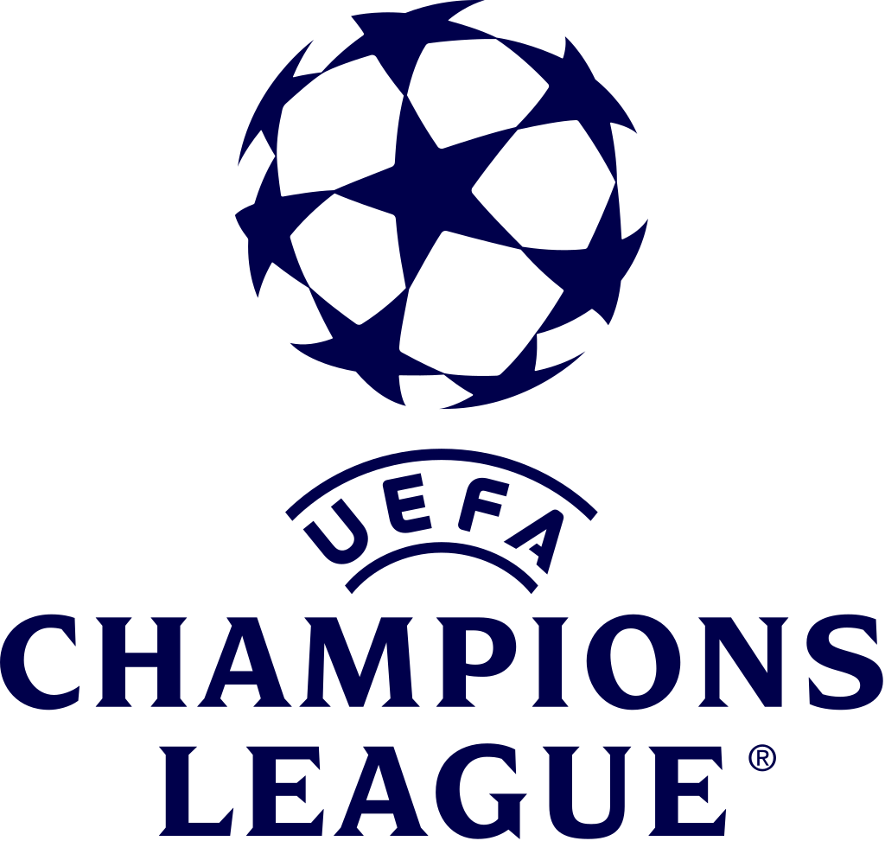

Most successful team
Real Madrid won UCL 13 times.
UEFA Champions League Site
The UEFA Champions League is an annual club football competition organised by UEFA and contested by top-division European clubs, deciding the competition winners through a round robin group stage to qualify for a double-legged knockout format, and a single leg final. It is one of the most prestigious football tournaments in the world and the most prestigious club competition in European football, played by the national league champions (and, for some nations, one or more runners-up) of their national associations.
Next matches
| Host team | Guest team | Day | Hour | TV Channel |
|---|---|---|---|---|
| Bayern | Salzburg | 08.03.2022 | 22:00 | Digi Sport 1 |
| Liverpool | Inter | 08.03.2022 | 22:00 | |
| Man. City | Sporting Lisbon | 09.03.2022 | 22:00 | |
| Real Madrid | PSG | 09.03.2022 | 22:00 | Sport.ro |
| Man. United | Atletico Madrid | 15.03.2022 | 22:00 |
Best players:
Most successful team
Real Madrid won UCL 13 times.
The player with the most matches
Cristiano Ronaldo has 181 matches in UCL.